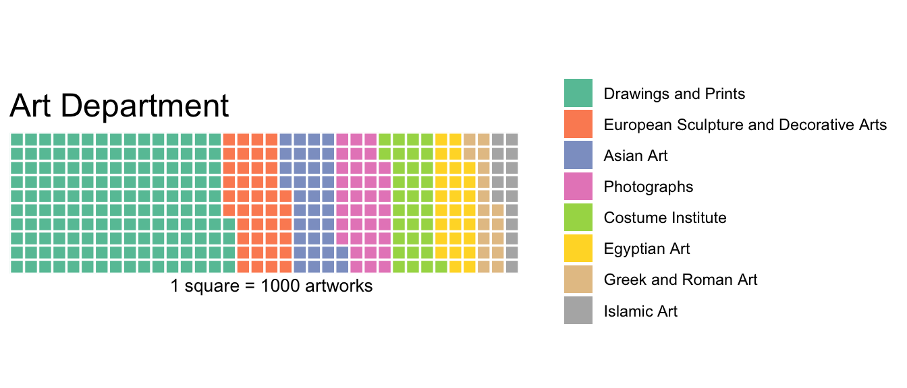

Chapter 2 OneRule
2.1 Exploratory Analysis
Most of the artworks at the Met at Drawings and Prints. This makes sense becuase these are probably the easiest high medium to make! Photographs are also low effort to make and thus they are in high quantity.
2.2 Model 1
The One Rule Model does not work for this task. The summary of the model is incredibly dense, and the “One Rule” chosen is in fact the name of the artist. For a datset of this size, it is almost impossible to interpret the model results because the model results are no better than me walking into the Met with a list of famous artists in my head. Van Gogh = Is.Highlight I would expect, and that is the case.
## [1] 0.95875## [1] 0.465With the oneRule model, we are able to find out that the Object.Date column is able to predict the training dataset 96% of the time; however, on the test dataset it is only able to predict 46.5% of the time. This means that the oneRule model is not very accurate, and thus we should try more models.
It also tells us that 46.5% of the variation in the IsHighlight variable can be explained with the Object.Date variable in this sample. Let’s see if that holds up if we use a larger sample!
## [1] 0.96625## [1] 0.46With a dataset of 100,000 randomly selected rows, the model chooses to use the Object.Date as the explanatory variable.
For this larger sample, we find that it is able to predict the class from the object data with 96% accuracy on the training set, while it is able to predict the isHighlight variable with a 47% accuracy.
While this project focuses on interpretability, it is clear that the model does not capture the nuances of the isHighlight variable and thus it is hard to trust the results. Thus, we will move onto the next option.

The period and culture variables are dominated by empty values. The department is not - something that the Met must use as a catch-all term for all different types of artworks. To fix the empty values, we will engage in basic data cleaning.
Basic Data Cleaning:
- all to lowercase
- removed punctuation, “possibly” and “probably”
- Removed columns with significant NA values: Period, Dynasty, Reign, Portfolio, Artist Prefix, Excavation, River, Repository, etc.
2.3 Model 1
All variables
## [1] "The accuracy on the training dataset is: 0.520511096166779"## [1] "The accuracy on the testing dataset is: 0.0645161290322581"In this model, the One Rule is the title of the artwork, chosen from all of the possible variables in the dataset. Using the art title, we perform only a little better than random on the dataset and we perform much worse than random on the test set. This is a great example of overfitting, because the model performs significantly better on the training set than on the test set.
2.4 Model 2
Only Public Domain
##
## Call:
## OneR.formula(formula = is.highlight ~ is.public.domain, data = train_dat)
##
## Rules:
## If is.public.domain = False then is.highlight = False
## If is.public.domain = True then is.highlight = True
##
## Accuracy:
## 2044 of 2974 instances classified correctly (68.73%)
##
## Contingency table:
## is.public.domain
## is.highlight False True Sum
## False * 847 636 1483
## True 294 * 1197 1491
## Sum 1141 1833 2974
## ---
## Maximum in each column: '*'
##
## Pearson's Chi-squared test:
## X-squared = 438.12, df = 1, p-value <
## 2.2e-16
## [1] "The accuracy on the training dataset is: 0.68728984532616"## [1] "The accuracy on the testing dataset is: 0.654569892473118"This model is based only on the is.public.domain variable. From this, we can tell that a large majority of artworks in the public domain are highlights (66%), compared to the large amounts of works that are not in the public domain and are not highlights (~75%).
As a baseline, this means that with only one variable “is.public.domain”, we can achieve an accuracy of .68 on the training and test set. This is a great example where the model has not over or under-fit because they are at the same accuracy.
This baseline will help us understand if the more complicated models are making a large improvement on the data or not.